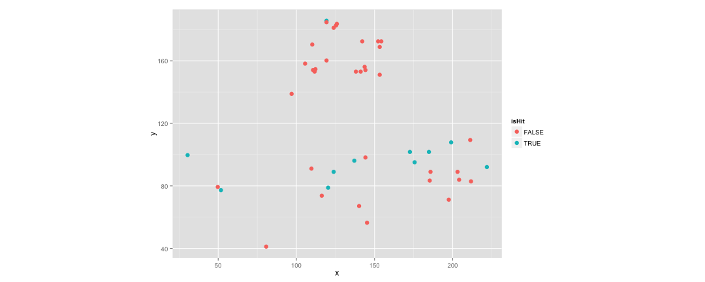

R 資料分析上手課程 { 閃電秀 }
Lightning Talk | R <3 Baseball
Summit Suen
Taiwan R User Group
R 就是要拿來跑統計啊，不然要幹嘛？
工欲善其事，必先利其器
# install.packages("Lahman")
library(Lahman)
library(dplyr)
totalRS <- Teams %>% select(yearID, R, G) %>% mutate(AvgRperG = R/G) %>% group_by(yearID) %>% summarise(sum(AvgRperG))
names(totalRS) <- c("yearID", "RUN")
head(totalRS)
## Source: local data frame [6 x 2]
##
## yearID RUN
## 1 1871 93.12897
## 2 1872 95.21474
## 3 1873 73.15998
## 4 1874 58.55903
## 5 1875 70.08774
## 6 1876 47.01267
工欲善其事，必先利其器
library(ggplot2)
ggplot(data = totalRS, aes(x = yearID, y = RUN)) + stat_smooth() + geom_line()
## geom_smooth: method="auto" and size of largest group is <1000, so using loess. Use 'method = x' to change the smoothing method.

工欲善其事，必先利其器
library(Lahman)
library(dplyr)
head(filter(Batting, playerID == "jeterde01"))
## playerID yearID stint teamID lgID G G_batting AB R H X2B X3B HR
## 1 jeterde01 1995 1 NYA AL 15 15 48 5 12 4 1 0
## 2 jeterde01 1996 1 NYA AL 157 157 582 104 183 25 6 10
## 3 jeterde01 1997 1 NYA AL 159 159 654 116 190 31 7 10
## 4 jeterde01 1998 1 NYA AL 149 149 626 127 203 25 8 19
## 5 jeterde01 1999 1 NYA AL 158 158 627 134 219 37 9 24
## 6 jeterde01 2000 1 NYA AL 148 148 593 119 201 31 4 15
## RBI SB CS BB SO IBB HBP SH SF GIDP G_old
## 1 7 0 0 3 11 0 0 0 0 0 15
## 2 78 14 7 48 102 1 9 6 9 13 157
## 3 70 23 12 74 125 0 10 8 2 14 159
## 4 84 30 6 57 119 1 5 3 3 13 149
## 5 102 19 8 91 116 5 12 3 6 12 158
## 6 73 22 4 68 99 4 12 3 3 14 148
工欲善其事，必先利其器
# install.packages("Sxslt", repos = "http://www.omegahat.org/R", type = "source")
# require(devtools)
# install_github("openWAR", "beanumber")
require(openWAR)
getGameIds(date=as.Date("2015-08-19"))
##
## Retrieving data from 2015-08-19 ...
## ...found 15 games
## [1] "gid_2015_08_19_arimlb_pitmlb_1" "gid_2015_08_19_atlmlb_sdnmlb_1"
## [3] "gid_2015_08_19_chamlb_anamlb_1" "gid_2015_08_19_clemlb_bosmlb_1"
## [5] "gid_2015_08_19_detmlb_chnmlb_1" "gid_2015_08_19_kcamlb_cinmlb_1"
## [7] "gid_2015_08_19_lanmlb_oakmlb_1" "gid_2015_08_19_miamlb_milmlb_1"
## [9] "gid_2015_08_19_minmlb_nyamlb_1" "gid_2015_08_19_nynmlb_balmlb_1"
## [11] "gid_2015_08_19_seamlb_texmlb_1" "gid_2015_08_19_sfnmlb_slnmlb_1"
## [13] "gid_2015_08_19_tbamlb_houmlb_1" "gid_2015_08_19_tormlb_phimlb_1"
## [15] "gid_2015_08_19_wasmlb_colmlb_1"
gd = gameday(gameId="gid_2015_08_19_wasmlb_colmlb_1")
## gid_2015_08_19_wasmlb_colmlb_1
gd$url
## bis_boxscore.xml
## "http://gd2.mlb.com/components/game/mlb/year_2015/month_08/day_19/gid_2015_08_19_wasmlb_colmlb_1/bis_boxscore.xml"
## inning_all.xml
## "http://gd2.mlb.com/components/game/mlb/year_2015/month_08/day_19/gid_2015_08_19_wasmlb_colmlb_1/inning/inning_all.xml"
## inning_hit.xml
## "http://gd2.mlb.com/components/game/mlb/year_2015/month_08/day_19/gid_2015_08_19_wasmlb_colmlb_1/inning/inning_hit.xml"
## game.xml
## "http://gd2.mlb.com/components/game/mlb/year_2015/month_08/day_19/gid_2015_08_19_wasmlb_colmlb_1/game.xml"
## game_events.xml
## "http://gd2.mlb.com/components/game/mlb/year_2015/month_08/day_19/gid_2015_08_19_wasmlb_colmlb_1/game_events.xml"
工欲善其事，必先利其器
str(gd$ds)
## Classes 'GameDayPlays', 'tbl_df', 'tbl' and 'data.frame': 73 obs. of 62 variables:
## $ pitcherId : num 544931 544931 544931 407822 407822 ...
## $ batterId : num 453568 408314 471865 150029 457787 ...
## $ field_teamId : chr "120" "120" "120" "115" ...
## $ ab_num : num 6 7 8 1 2 3 4 5 13 14 ...
## $ inning : num 1 1 1 1 1 1 1 1 2 2 ...
## $ half : Factor w/ 2 levels "bottom","top": 1 1 1 2 2 2 2 2 1 1 ...
## $ balls : num 3 0 3 1 3 2 1 1 3 0 ...
## $ strikes : num 2 2 3 3 3 1 1 2 2 1 ...
## $ endOuts : num 0 2 3 1 2 2 2 3 1 1 ...
## $ event : Factor w/ 21 levels "Caught Stealing 2B",..: 16 14 18 18 18 16 16 6 14 4 ...
## $ actionId : num NA NA NA NA NA NA NA NA NA NA ...
## $ description : Factor w/ 81 levels "Ben Paulsen flies out to left fielder Jayson Werth. ",..: 18 42 14 35 21 10 79 30 53 3 ...
## $ stand : Factor w/ 2 levels "L","R": 1 1 1 2 2 1 2 2 2 1 ...
## $ throws : Factor w/ 2 levels "L","R": 2 2 2 1 1 1 1 1 2 2 ...
## $ runnerMovement: chr "[453568::1B::Single]" "[453568:1B:::Caught Stealing 2B]" "" "" ...
## $ x : num 173 112 NA NA NA ...
## $ y : num 102 153 NA NA NA ...
## $ game_type : Factor w/ 1 level "R": 1 1 1 1 1 1 1 1 1 1 ...
## $ home_team : Factor w/ 1 level "col": 1 1 1 1 1 1 1 1 1 1 ...
## $ home_teamId : num 115 115 115 115 115 115 115 115 115 115 ...
## $ home_lg : Factor w/ 1 level "NL": 1 1 1 1 1 1 1 1 1 1 ...
## $ away_team : Factor w/ 1 level "was": 1 1 1 1 1 1 1 1 1 1 ...
## $ away_teamId : num 120 120 120 120 120 120 120 120 120 120 ...
## $ away_lg : Factor w/ 1 level "NL": 1 1 1 1 1 1 1 1 1 1 ...
## $ venueId : num 19 19 19 19 19 19 19 19 19 19 ...
## $ stadium : Factor w/ 1 level "Coors Field": 1 1 1 1 1 1 1 1 1 1 ...
## $ timestamp : chr "2015-08-20 00:55:03" "2015-08-20 00:58:48" "2015-08-20 01:01:32" "2015-08-20 00:42:10" ...
## $ playerId.C : num 467092 467092 467092 460026 460026 ...
## $ playerId.1B : num 475582 475582 475582 572019 572019 ...
## $ playerId.2B : num 457787 457787 457787 518934 518934 ...
## $ playerId.3B : num 488862 488862 488862 571448 571448 ...
## $ playerId.SS : num 435622 435622 435622 408314 408314 ...
## $ playerId.LF : num 150029 150029 150029 592621 592621 ...
## $ playerId.CF : num 572191 572191 572191 453568 453568 ...
## $ playerId.RF : num 547180 547180 547180 471865 471865 ...
## $ batterPos : chr "CF" "SS" "RF" "LF" ...
## $ batterName : Factor w/ 26 levels "Arenado","Axford",..: 5 21 11 25 9 12 8 7 1 19 ...
## $ pitcherName : Factor w/ 26 levels "Arenado","Axford",..: 23 23 23 6 6 6 6 6 23 23 ...
## $ runsOnPlay : int 0 0 0 0 0 0 0 0 0 0 ...
## $ startOuts : num 0 0 2 0 1 2 2 2 0 1 ...
## $ runsInInning : int 0 0 0 0 0 0 0 0 1 1 ...
## $ runsITD : num 0 0 0 0 0 0 0 0 0 0 ...
## $ runsFuture : num 0 0 0 0 0 0 0 0 1 1 ...
## $ start1B : chr NA "453568" NA NA ...
## $ start2B : chr NA NA NA NA ...
## $ start3B : chr NA NA NA NA ...
## $ end1B : chr "453568" NA NA NA ...
## $ end2B : chr NA NA NA NA ...
## $ end3B : chr NA NA NA NA ...
## $ outsInInning : num 3 3 3 3 3 3 3 3 3 3 ...
## $ startCode : num 0 1 0 0 0 0 1 3 0 0 ...
## $ endCode : num 1 0 0 0 0 1 3 0 0 2 ...
## $ fielderId : num NA 435622 NA NA NA ...
## $ gameId : chr "gid_2015_08_19_wasmlb_colmlb_1" "gid_2015_08_19_wasmlb_colmlb_1" "gid_2015_08_19_wasmlb_colmlb_1" "gid_2015_08_19_wasmlb_colmlb_1" ...
## $ isPA : logi TRUE TRUE TRUE TRUE TRUE TRUE ...
## $ isAB : logi TRUE TRUE TRUE TRUE TRUE TRUE ...
## $ isHit : logi TRUE FALSE FALSE FALSE FALSE TRUE ...
## $ isBIP : logi TRUE TRUE FALSE FALSE FALSE TRUE ...
## $ our.x : num 118.8 -33.2 NA NA NA ...
## $ our.y : num 243 115 NA NA NA ...
## $ r : num 270 119 NA NA NA ...
## $ theta : num 1.12 1.85 NA NA NA ...
工欲善其事，必先利其器
ggplot(data = gd$ds, aes(x = x, y = y, color = isHit)) + geom_point(size = 3) + coord_fixed()
## Warning: Removed 28 rows containing missing values (geom_point).

Recap
拿資料
靜態資料庫
即時資料源
隨時爬網頁
Recap
玩資料
意猶未盡嗎？更多精彩的內容等著大家⋯⋯